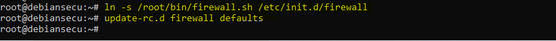

Parefeu local¶
-classification (niveau ANSSI,type de mesure, …) -sources -procédures -commentaires (résultat, mesure écartée, conservée, adaptée,…)
Classification¶
Niveau ANSSI : intermédiaire
Gestion des flux
Procédures¶
Voici une première version du script iptables que nous allons appliquer sur le serveur. Ses caractéristiques sont :
Les flux entrants sont bloqués par défaut
Les flux sortants sont autorisés par défaut
Les flux entrants sur le port SSH sont autorisés
Les nouvelles connexions SSH sont journalisées
On restreint les droits sur ce script :
On redirige les journaux généré par le parefeu vers le fichier /var/log/iptables.log :
Mise en place du parefeu local¶
Appliquons maintenant les politiques définies dans le script :

Faisons en sorte que ces politiques soient persitantes :



Amélioration du parefeu local¶
Ajoutons des règles de filtrage sur le traffic sortant :